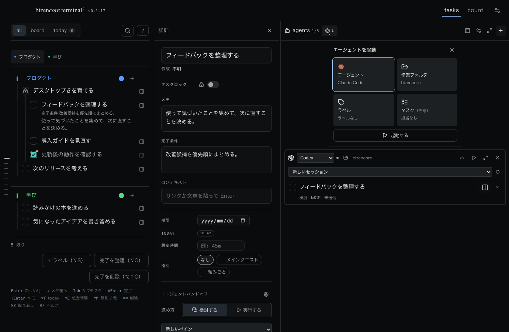

bizencore terminal2
このアプリはAppleのDeveloper ID署名・公証を受けていません。Appleによる安全性確認はなく、macOSが起動をブロックする場合があります。

インストール
- 公開済みのZIPと
SHA256SUMSを、このページのリンクから取得します。 - ZIPのチェックサムを照合します。不一致の場合は起動せず、再ダウンロードしてください。
- ZIPを展開し、
bizencore terminal.appを「アプリケーション」に移します。 - アプリを開き、bizencoreにサインインします。作業フォルダとエージェントを選び、明示的に起動してください。
macOSに起動をブロックされた場合
安全性を確認できないアプリは開かないでください。配布元とチェックサムを確認し、未公証であることを理解したうえで、このアプリだけを許可すると判断した場合は、Appleの「プライバシーとセキュリティ」の案内を確認してください。許可や本人認証はご自身で行ってください。
OS全体の保護を無効化したり、隔離属性を削除する方法は案内しません。「破損している」と表示された場合は安全なものと決めつけず、取得し直してチェックサムを確認してください。
Claude Code / Codexが見つからない場合
アプリのエージェント診断で導入状態を確認してください。各CLIは別のソフトウェアです。自動インストールやAIサービスへの自動登録は行いません。ご自身の契約と認証を使います。
サインイン・認証復元で止まる場合
通信状態と、背後にmacOSのキーチェーンや本人認証のダイアログが出ていないか確認してください。アカウントや保存データを削除せず、再読み込みしてください。Google等の認証やmacOSの本人認証はご自身で完了してください。確認できるまでタスク・エージェント機能は使えません。
更新と旧版への戻し
0.1.19以降では、ヘッダー右上の更新アイコンから新版をダウンロードできます。完了したら「再起動して更新」を押すと、入力内容を保存してアプリを入れ替えます。
実行中のエージェントがある場合は終了確認が表示され、キャンセルすれば作業を続けられます。ログイン情報・タスク・設定は保持し、再起動後にエージェントを自動で起動しません。新版が起動しなければ旧版アプリへ戻します。書き込み可能な「アプリケーション」フォルダに置いて利用してください。
0.1.18以前からの初回更新は、以下の手順で行ってください。その後の更新はアプリ内で行えます。
- 作業を終えるかエージェントを明示的に停止し、
⌘Qでアプリを完全終了します。 - 新しいZIPのチェックサムを確認して展開し、旧版を保管してから新版を同じ場所に置きます。
- アプリを起動し、アカウント・タスク・設定を確認してください。macOSが個別の起動許可を求める場合があります。
データと権限
アカウント認証にはClerk、タスクや添付の同期にはConvexを使います。認証トークンの端末保存にはmacOSの暗号化機能を使います。作業フォルダ、ペイン配置、会話の紐付けなどは端末にも保存されます。
起動するCLIはローカルで動き、ご自身のAIサービスへの認証・契約・権限設定を使います。ファイルの読み書きやコマンド実行が可能なため、作業フォルダとCLIの許可を確認してください。一般CLIの権限までbizencoreが自動で制限・保証するものではありません。
更新確認では、公式の公開バージョン情報だけを取得します。アカウントの認証トークン、タスク、フォルダ、会話を更新サーバーへ送る設計ではありません。表示用フォントや認証SDKなどには外部サービスへの通信があります。
β版の確認範囲
開発に使用したApple Silicon Macで、ログイン復元、両CLIでの作業・進捗同期、手動更新、未導入CLIの案内、フォルダ権限不足の表示を確認しています。すべてのMac・macOSでの動作を保証するものではありません。
不具合の報告
バージョン、macOSのバージョン、Macの種類、再現手順、表示されたエラーを確認してください。GitHubのIssuesから報告できます。
Issuesは公開の場です。認証トークン、秘密鍵、メールアドレス、個人のタスク・会話、ローカルパスを含むスクリーンショットやログをそのまま投稿しないでください。